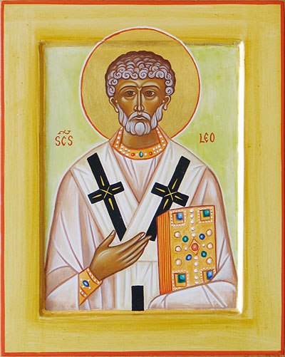
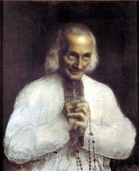

Svatý Lev Veliký
Obdivuhodná je moc kříže!... Tvůj kříž je zdrojem všeho požehnání, je příčinou všech milostí. Skrze něj se věřícím dostává v slabosti síla, v potupě sláva, ve smrti život...

Pavel Kosorin
Život bez Krista je kříž. Život s Kristem je Kristův kříž.
Sv. Jan Maria Vianey
Nejsi to ty, kdo nese kříž, kříž nese tebe.
